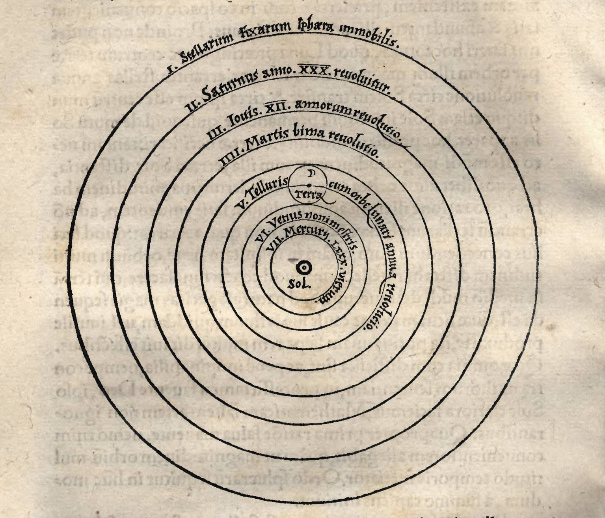
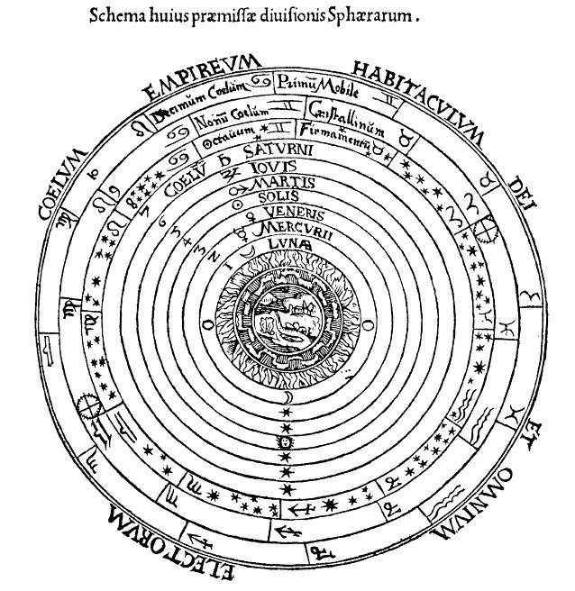
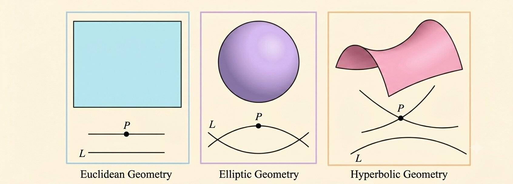
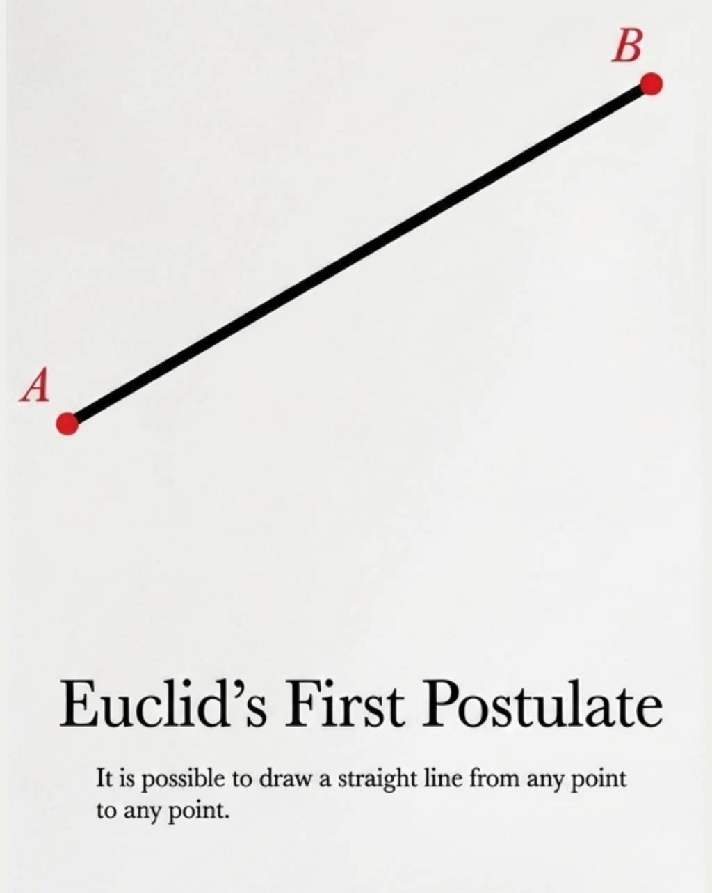
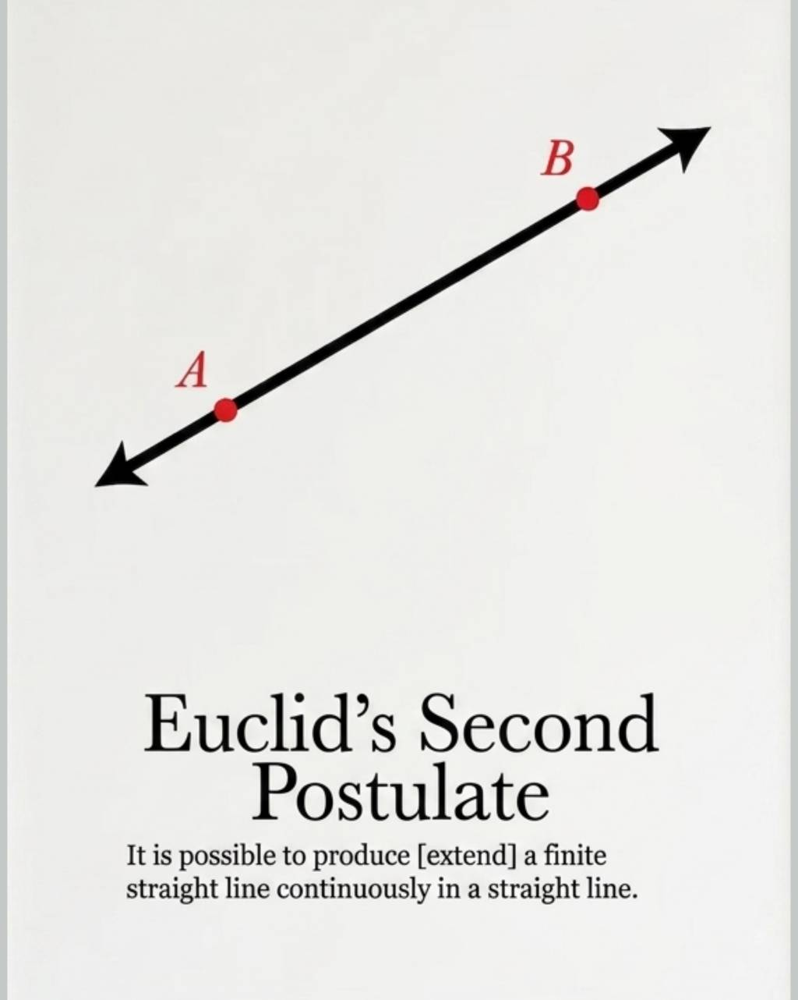
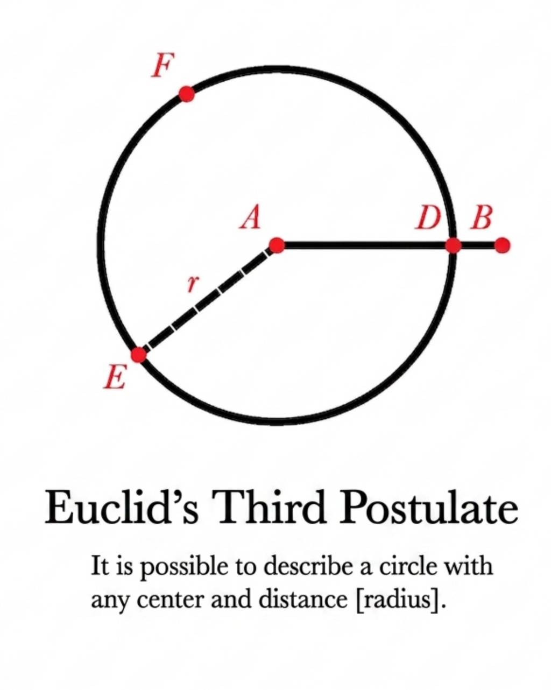
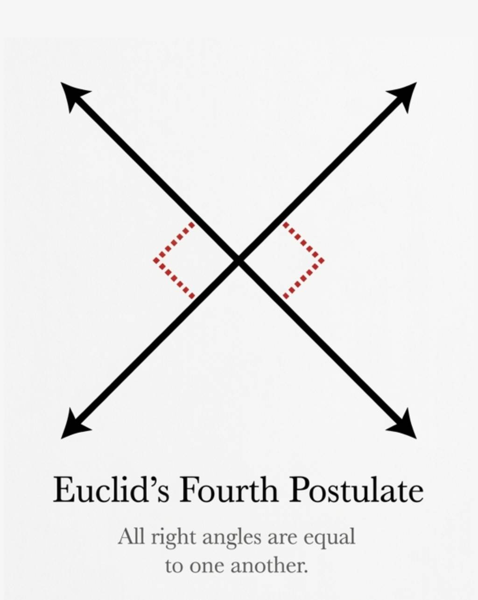
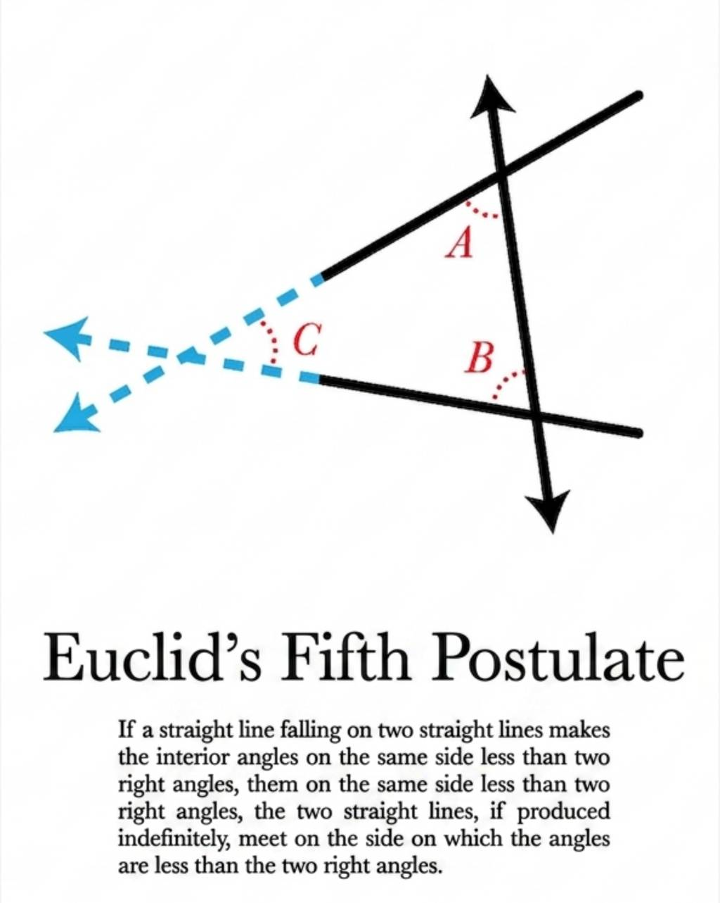

مدل
EVOLUTION OF GRAVITY AND NON-EUCLIDEAN SPACETIME GEOMETRY
scroll down to read the full infograph. You can click on each model for extra explanation and hold each to rotate the 3D models for better understanding of the topic.
Part I: Historical Evolution of Cosmological Models
- Ptolemy and the Almagest: For centuries, the geocentric model presented by Ptolemy in the Almagest dominated scientific thought. It posited that the Earth was the stationary center of the universe, though the model was flawed in its predictive accuracy.
- Copernicus and Heliocentrism: In the 16th century, Nicolaus Copernicus introduced the Heliocentric model. By placing the Sun at the center, he provided a much simpler explanation for planetary motions, such as retrograde motion, which previously required complex mathematical "epicycles".
- Galileo’s Observational Evidence: Using a telescope, Galileo provided the first physical evidence against geocentrism. His discovery of the moons of Jupiter and the phases of Venus proved that not all celestial bodies revolve around the Earth. Furthermore, his experiments established that all objects fall with the same acceleration regardless of mass.
- Kepler’s Three Laws: Based on precise astronomical observations, Johannes Kepler formulated three laws of planetary motion. While Kepler described how planets moved (in elliptical orbits), he did not yet understand the underlying force driving them.
Early Cosmological Models


(4)
Part II: Newtonian Mechanics and Euclidean Foundations
-
Newton’s Universal Gravitation: Newton synthesized the work of Galileo and Kepler, defining gravity as a universal force.
$$F = G \frac{m_1 m_2}{r^2}$$
-
Laws of Motion: Newton established three fundamental laws of motion, specifically the second law:
$$F = ma$$
- The Problem of "Self-Evident" Definitions: Newtonian mechanics relies on the Euclidean definition of a straight line as a self-evident concept. Newton's First Law (an object remains at rest or in uniform motion in a straight line unless acted upon by a force) is fundamentally built upon this "obvious" definition, which non-Euclidean geometry eventually challenged.
-
Euclidean Geometry and the Five Postulates: Euclidean geometry formed the mathematical bedrock of Newtonian physics. Its five postulates define a "flat" space:
- 1. A straight line can be drawn between any two points.
- 2. A finite line can be extended indefinitely.
- 3. A circle can be described with any center and radius.
- 4. All right angles are equal.
- 5. The Parallel Postulate: Through a point not on a given line, only one parallel line can be drawn.
-
The Parallel Postulate and Curvature: Modifying the 5th postulate leads to different geometric surfaces:
- • Flat (Euclidean): Triangle angles sum to exactly 180°.
- • Spherical (Positive Curvature): Triangle angles sum to > 180°.
- • Hyperbolic (Negative Curvature): Triangle angles sum to < 180°.

Part III: Metrics and Cosmological Models
- The Metric Tensor: A metric is a mathematical rule used to calculate the interval or distance between two neighboring points.
-
2D Euclidean:
$$dl^2 = dr^2 + r^2 d\theta^2$$
-
2D Non-Euclidean:
$$dl^2 = a^2 \left( \frac{dr'^2}{1 - r'^2} + r'^2 d\theta^2 \right)$$
- Inherent Differences: These metrics represent different internal curvatures ($k$) and cannot be mathematically transformed into one another.
- The 4D Spacetime Interval: In General Relativity, the metric is extended to a 4D non-Euclidean spacetime $(ds)^2$ with a Lorentzian signature, typically featuring one positive time component and three negative spatial components.
-
Curvature and Universe Models: The curvature parameter $k$ dictates the global geometry of the universe:
- • $k = +1$: Spherical geometry, corresponding to a Closed universe.
- • $k = 0$: Euclidean geometry, corresponding to a Flat universe.
- • $k = -1$: Hyperbolic geometry, corresponding to an Open universe.
-
The Robertson-Walker (RW) Metric: Assuming the universe is homogeneous and isotropic, its geometry is described by the RW metric using the radial coordinate $\varpi$ (varpi) and a time-dependent scale factor $R(t)$:
$$(ds)^2 = (cdt)^2 - R^2(t) \left[ \frac{d\varpi^2}{1 - k\varpi^2} + \varpi^2 d\theta^2 + \varpi^2 \sin^2\theta d\phi^2 \right]$$
EUCLIDEAN FOUNDATIONS





(3)
Part IV: The Transition to Non-Euclidean Spacetime

- The Foundations of Modern Geometry: Mathematicians such as Gauss, Riemann, and Lobachevsky developed non-Euclidean systems. They redefined a "straight line" as a geodesic—the shortest path between two points on any given surface. Einstein utilized these non-Euclidean principles to construct the theories of Special and General Relativity.
- Special Relativity and 4D Spacetime: Special Relativity transformed our understanding of time. Instead of being a mere parameter of evolution ($t$), time became the fourth dimension of a unified 4D spacetime manifold ($x^0 = ct$).
-
Comparing Newton’s Second Law to the Geodesic Equation:
-
• Newtonian Mechanics:
$$F = m \frac{d^2x}{dt^2}$$
-
• General Relativity (The Geodesic Equation):
$$\frac{d^2x^\lambda}{d\tau^2} + \Gamma^\lambda_{\mu\nu} \frac{dx^\mu}{d\tau} \frac{dx^\nu}{d\tau} = 0$$
-
• Newtonian Mechanics:
- Gravity as Geometry, Not Force: In this equation, $\tau$ (tau) is the proper time or evolution parameter. When comparing this to the case where Newtonian force ($F$) is zero, the term involving $\Gamma$ (The Connection/Christoffel Symbols) represents the gravitational effect. This demonstrates that in General Relativity, gravity is not a force but a manifestation of the geometric properties of curved spacetime.